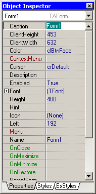
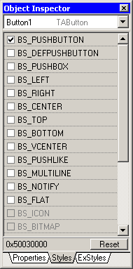

|
Object Inspector contain two parts - a Combo with all form controls and Property Editor grid. |
 |
|
 |
Some value types can be edited directly in the grid: numeric, string, Boolean, options and idents. All other property types have its own custom property editor, that can be opened by double clicking on value field or pressing ”…” button on the right side of the field. |
Styles definitions reside in styles.xml file.
<data>
<styles>
<class name=TAForm>
<style name="WS_MAXIMIZEBOX" value="00010000"/>
Each <style> definition has attributes:
| name | API name of style |
| value | it's value |
Each <style> definition can have optional attributes:
| mask | this attribute is used for set of styles, when only one of them can be enabled at the time (switch). Mask value should be the maximal value of the set. |
| managed | this flag indicates that the style is managed by program (1/0). This generally can be used for disabling style in editor. This flag have a synonym “forced” which is deprecated and will be removed in future versions. |